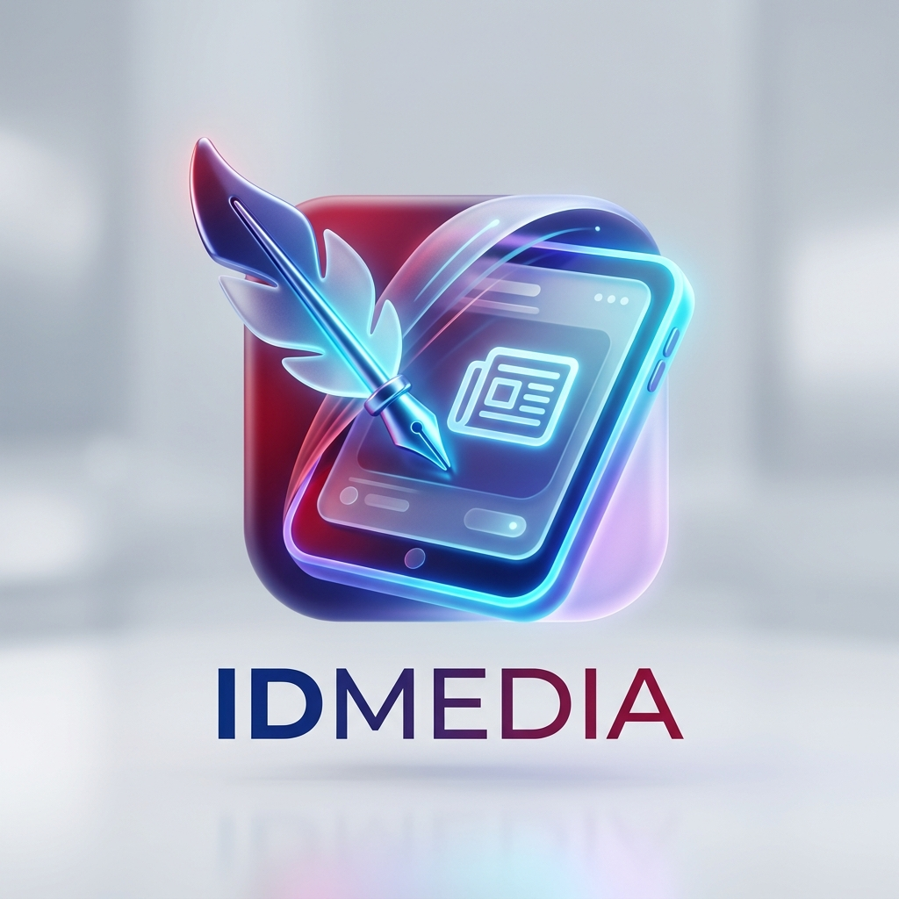

Smart Listicle Editor
Pola baku: Subjudul (H2) ➜ Gambar ➜ Narasi min. 3 kalimat. Dilengkapi detektor kuantitas kata (>= 500) dan verifikasi kapitalisasi judul EYD V.

IDMEDIAIDMedia adalah platform penulisan dan kurasi komunitas digital yang mengadopsi standar redaksi nasional. Dilengkapi validator otomatis kaidah EYD V, Excerpt hook, format Listicle terstruktur, serta panduan SOP gambar resmi.
Pola baku: Subjudul (H2) ➜ Gambar ➜ Narasi min. 3 kalimat. Dilengkapi detektor kuantitas kata (>= 500) dan verifikasi kapitalisasi judul EYD V.
Validasi gambar rasio 3:2 landscape, bebas watermark, serta format penulisan caption frasa ilustrasi maupun kalimat berita peristiwa.
Alur kerja editorial transparan: antrean review naskah, persetujuan tayang (publish), permintaan revisi disertai catatan spesifik, atau penolakan.
Simulasi konversi views organik menjadi IDN Points (1 Poin per 100 views) dan kalkulasi pencairan rupiah langsung ke e-wallet / rekening bank.